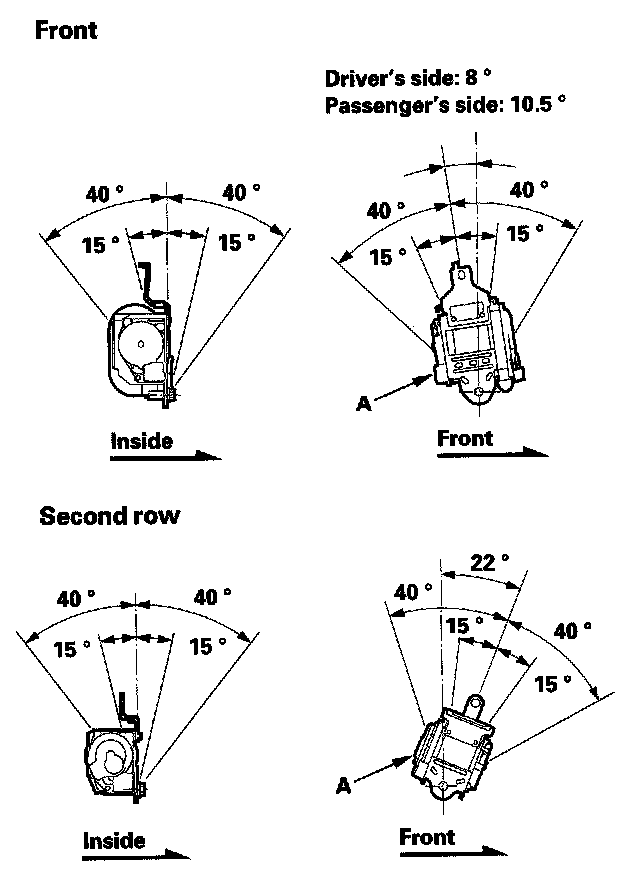
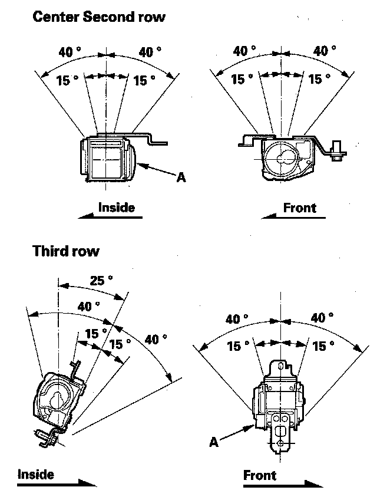

Seat Belt: Testing and Inspection
Seat BeltsInspection
Out of Vehicle
For front seat belt retractor with seat belt tensioner, review the SRS component locations and the precautions and procedures before doing repairs or service.
Retractor
1. Before installing the retractor, check that the seat belt can be pulled out freely.


2. Make sure that the seat belt does not lock when the retractor (A) is leaned slowly up to 15° from the mounted position. The seat belt should lock when the retractor is leaned over 40°. Do not attempt to disassemble the retractor.
3. Replace the seat belt with a new assembly if there is any abnormality. Do not disassemble any part of the seat belt for any reason.
In-vehicle
1. Check that the seat belt is not twisted or caught on anything.
2. After installing the anchors, check for free movement on the anchor bolts. If necessary, remove the anchor bolts and check that the washers and other parts are not damaged or improperly installed.
3. Check the seat belts for damage or discoloration. Clean with a shop towel if necessary. Use only soap and water to clean.
NOTE: Dirt build up in the loops of the upper anchors can cause the seat belts to retract slowly. Wipe the inside of the loops with a clean cloth dampened in isopropyl alcohol.
4. Check that the seat belt does not lock when pulled out slowly. The seat belt is designed to lock only during a sudden stop or impact.
5. Make sure that the seat belt will retract automatically when released.
6. For each passenger's seat belt, check the seat belt retractor locking mechanism ALR (automatic locking retractor). This function is for securing child seats.
1. Pull the seat belt all the way out to engage the ALR. The seat belt should retract, but not extend. This is normal.
2. To disengage the ALR, release the seat belt and allow it to fully retract, then pull the seat belt out part-way. The seat belt should retract and extend normally.
7. Replace the seat belt with a new assembly if there is any abnormality. Do not disassemble any part of the seat belt for any reason.